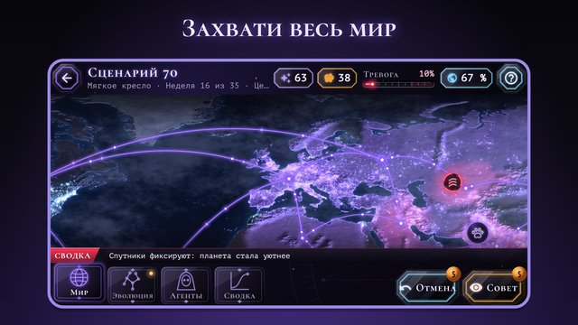

Культ: Мировое господство
Тайный орден захватывает ночную Землю: стратегия-симулятор и кликер.
Один сырой подвал, мигающая лампочка и кот. Отсюда начинается мировое господство. «Культ: Мировое господство» — стратегия-симулятор и кликер о донельзя нелепом тайном обществе: орден носков, пушистых лапок и вечного понедельника тихо расползается по ночной Земле.
Тапай по карте, чтобы собирать Влияние, лови знаки ордена и смахивай улики, пока их не заметило Всемирное бюро расследований. Покупай догматы, способы передачи и устойчивость, отправляй агентов и следи, чтобы Тревога не дошла до 100 %. Иначе Великого магистра покажут в вечерних новостях. В пижаме.

- Живая модель распространения: 12 регионов ночной Земли, каналы по суше и через океан, неоновое пятно ордена растекается по карте, а огни городов один за другим становятся фиолетовыми.
- 300 сценариев в 10 кампаниях: от одного подвала до всей планеты (и пингвинов), особые условия вроде «Без интернета», «Охота на ведьм» и «Блиц», кризис каждые десять сценариев.
- Древо из трёх ветвей по 10 узлов, недвижимость от подвала до небоскрёба и шесть агентов: агент Мурка, Бухгалтер, Пингвин-корреспондент и другие.
- Срочные сводки: больше 200 нелепых событий с выбором, бегущая строка новостей и графики роста и Тревоги.
- Совет Хранителя протоколов подскажет, что купить дальше, а последнюю покупку можно вернуть.
- Штаб ордена с комнатами и доходом в Печатях, коллекция доктрин, реликвий и достижений, символ и цвет своего ордена.
- Заговор дня, ежедневные задания и цель недели, праздничные события; игра без интернета, на русском и английском.
Всё вымышлено и смешно: никаких настоящих религий, стран, организаций и людей. Мир сам себя не захватит.